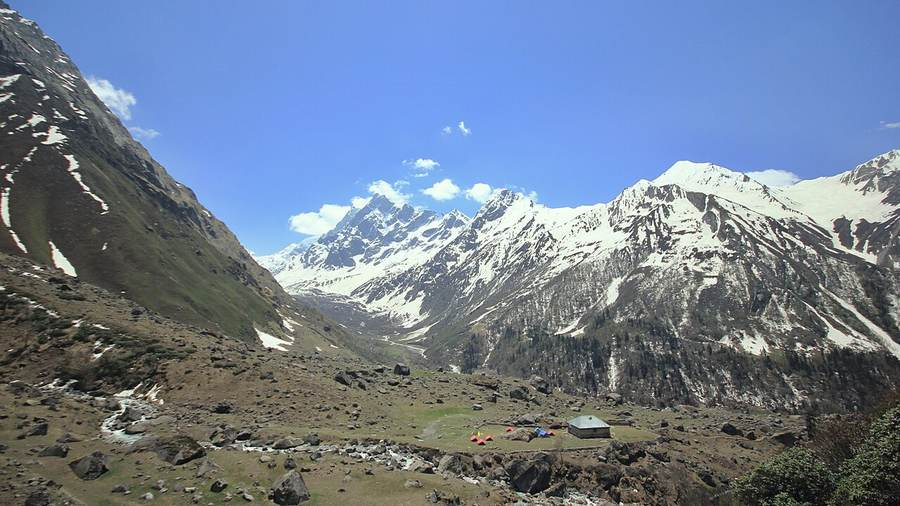
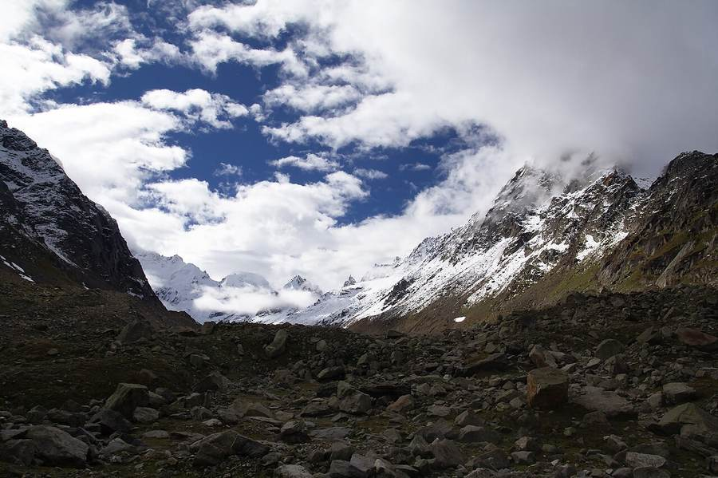
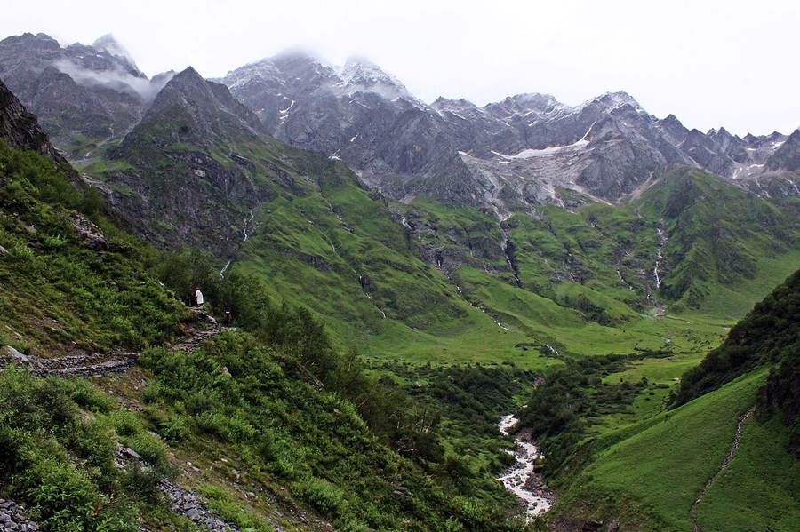
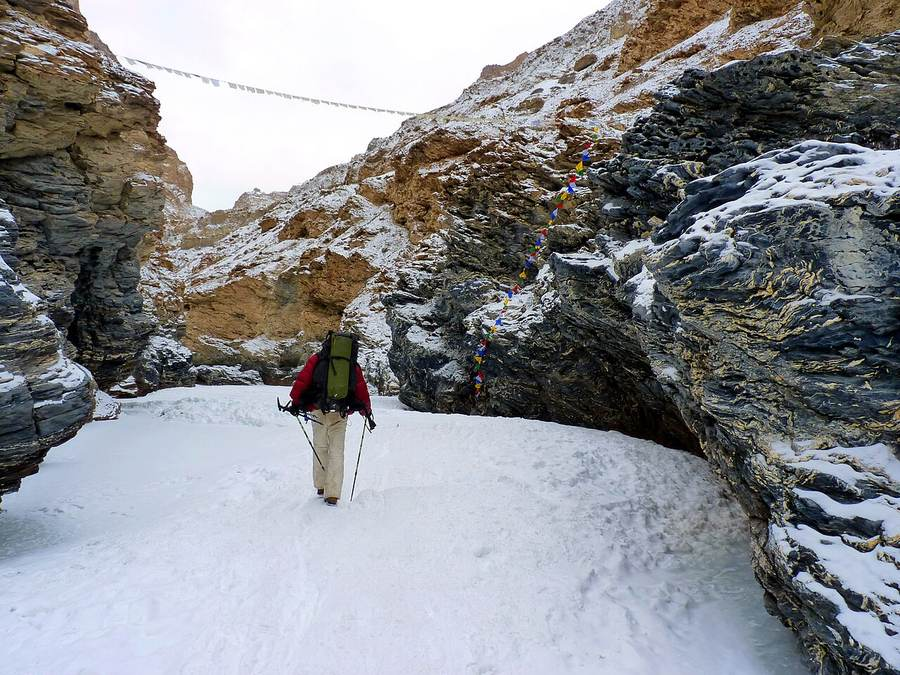
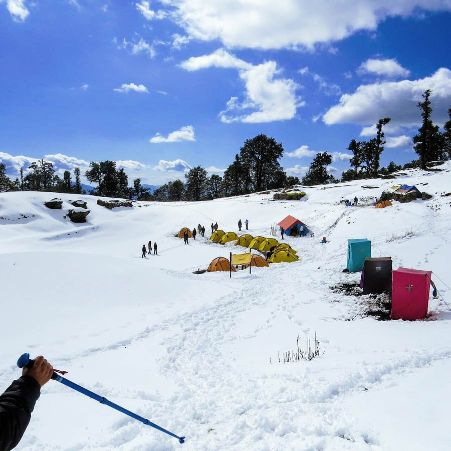
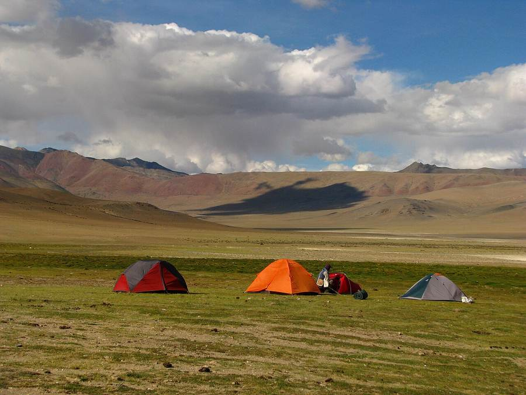
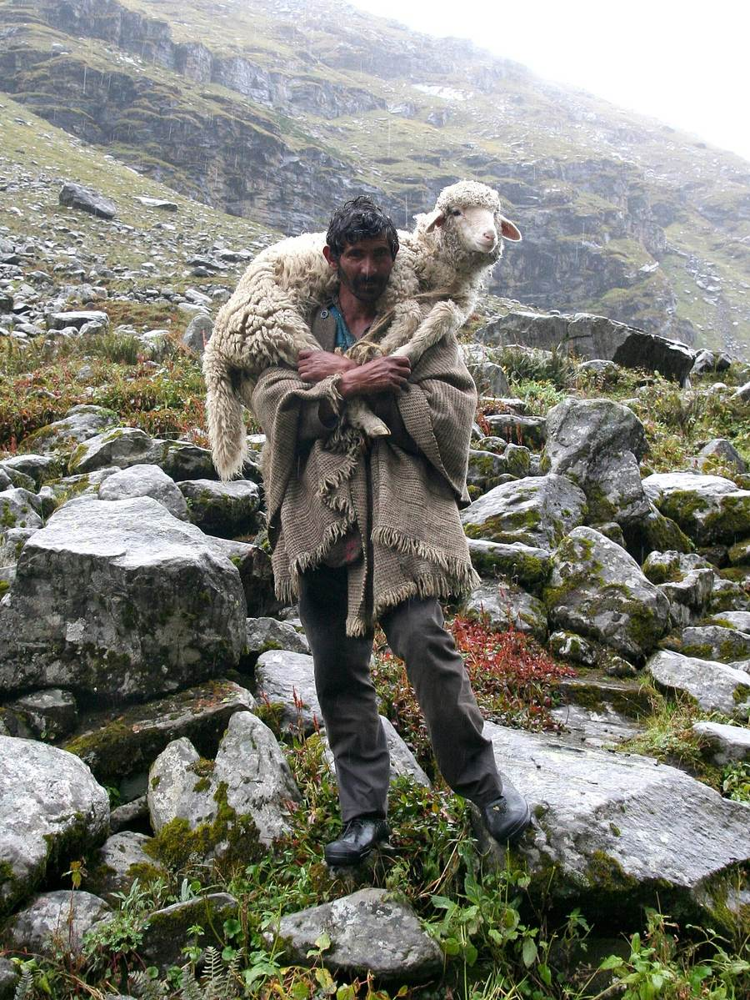
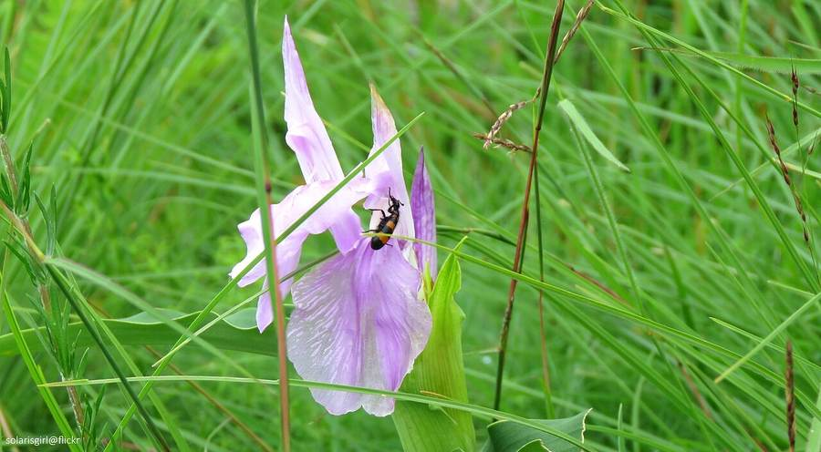
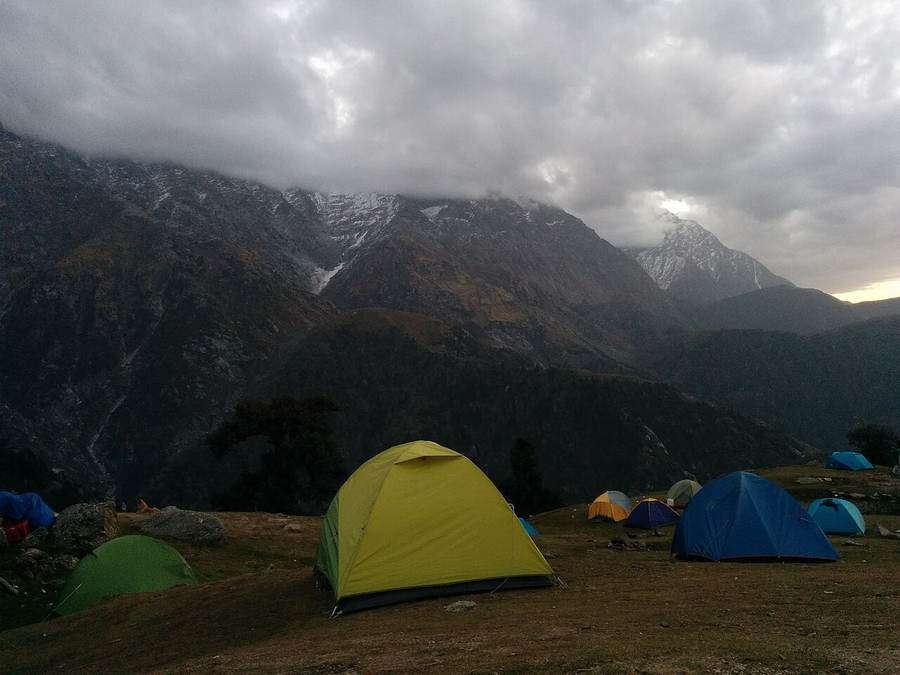

TrekwithG runs small-batch Himalayan treks for people who'd rather sweat up a ridgeline than scroll past one. Founded by Akash, guided in the field, planned around actual weather windows — not a brochure calendar.
Every itinerary is built with a rest day baked in above 3,200m and a hard turn-back rule if the group's pace slips — no summit is worth a case of altitude sickness. Batches are capped small enough that the guide knows your name by day two.
Fixed departuresCustom expeditionsGear on rentFirst-timers welcome
Campsites are chosen for water access and wind cover, not for the photo. Food is cooked fresh at every camp by the support crew — no freeze-dried packets unless you're above the last treeline.
"You don't need to be fit. You need to be stubborn for six days."— Akash, Founder
About
Built on trail, not in an office
TrekwithG started the way most good trekking outfits do — as one person's weekend habit that friends kept asking to join. What began as a WhatsApp group coordinating a Kedarkantha trip turned into fixed departures across Uttarakhand, Himachal and Ladakh.
The rule that hasn't changed since batch one: every route gets walked and re-walked by the team before it's sold. If a campsite runs dry or a bridge washes out, the itinerary changes before your money does.
TrekwithG also runs joint expeditions with regional partners — including Netra Adventures on select high-altitude routes — to bring in local crew who know a valley's weather better than any forecast.
Founder
Akash
@___akashh____
Leads route planning and the odd last-minute weather call. Usually reachable somewhere between a trailhead and a signal tower.
Wilderness first-aid trained6+ years on trail
Upcoming & recurring
Treks & expeditions
Sample departures — exact dates confirmed by batch, two weeks out.

Easy – Moderate
Kedarkantha
Uttarakhand · Govind Wildlife Sanctuary
A snow-guaranteed winter summit and the most reliable first Himalayan trek we run — forest camps, a frozen lake at Juda Ka Talab, then a ridge walk to a 360° summit.
3800mSummit alt.
5D / 4NDuration
Dec–AprSeason
Next batch forming · DM @trekwith_g

Moderate
Hampta Pass
Himachal Pradesh · Kullu–Lahaul crossing
Crosses from pine-forest Kullu into the stark brown Lahaul valley in one pass — the most dramatic landscape shift of any short trek we lead. Often paired with a Chandratal add-on.
4287mPass alt.
5D / 4NDuration
Jun–OctSeason
Next batch forming · DM @trekwith_g

Easy – Moderate
Valley of Flowers
Uttarakhand · UNESCO World Heritage Site
A monsoon-only window when the alpine meadow floods with 600+ flowering species — Himalayan blue poppy, cobra lily, wild orchids. Slow-paced by design, this one's about the valley floor, not a summit.
3658mValley alt.
6D / 5NDuration
Jul–SepSeason
Next batch forming · DM @trekwith_g

Strenuous · Expedition
Chadar
Ladakh · Frozen Zanskar river
You walk on the river itself. Sub-zero nights in caves, ice that cracks underfoot, temperatures down to −20°C, and a support crew that's walked this route more times than anyone should. Our most demanding departure.
3850mMax alt.
8D / 7NDuration
Jan–FebSeason
Limited to 12 trekkers · DM @trekwith_g

Moderate
Brahmatal
Uttarakhand · Alpine lake circuit
A winter ridge walk with views of Trishul and Nanda Ghunti most days — and a frozen lake camp that rarely makes it into the usual trek lists.
3734mSummit alt.
6D / 5NDuration
Dec–AprSeason
Next batch forming · DM @trekwith_g

Custom · Expedition
Build your own
Any region · with Netra Adventures on select routes
Corporate offsites, college groups, or a summit you've had on a list for years — we'll scope route, permits and crew for a private departure.
FlexibleDuration
4+Min. group
Start with a DM · @trekwith_g
From the trail
Gallery
Sankri region · near Kedarkantha basecampBrahmatal · campsite

Hampta Pass · on the trailChadar · on the frozen Zanskar

Valley of Flowers · peak bloom

Basecamp · night camp
Photos: Wikimedia Commons contributors, CC BY / CC BY-SA — see credits in the footer. Swap in your own trek photography anytime.
Get in touch
Plan your next trek
Fastest way in is Instagram — DM the handle below with your dates and we'll tell you straight if the route's open, sold out, or worth waiting a season for.